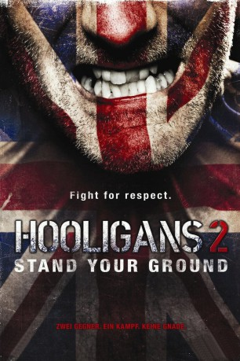
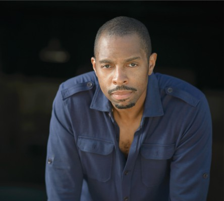
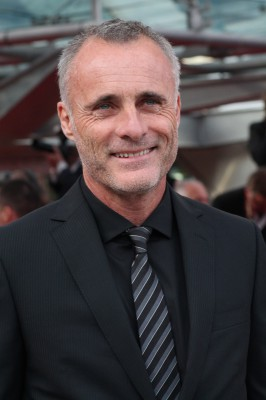
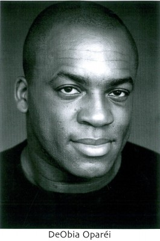
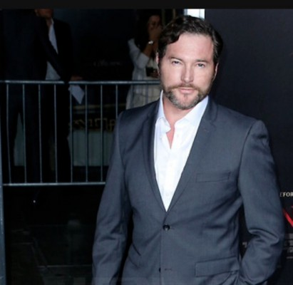
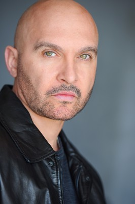
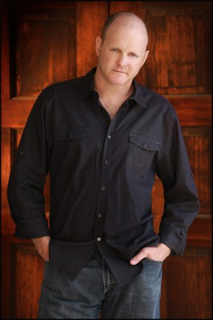
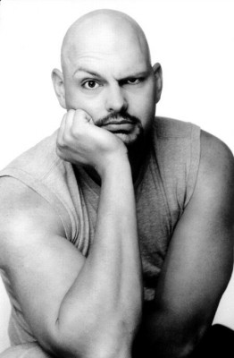
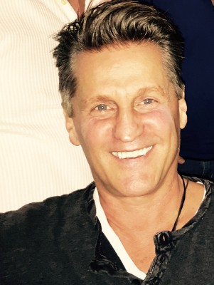

#3143 Hooligans 2 - Stand Your Ground
Alternativ: Green Street Hooligans 2
 
 IMDB-Wertung: 4.8 / 10
IMDB-Wertung: 4.8 / 10  Metascore: 0
Metascore: 0 
Nach einer tödlichen Auseinandersetzung zweier Firms der Londoner Clubs West Ham United und FC Millwall landen Mitglieder beider Seiten im Gefängnis. Für Dave (Ross McCall, der einzige Darsteller des Sequels, der auch im Vorgänger mitgespielt hat), Keith (Luke Massy) und Ned (Nick Holender), die zur Hooligan-Organisation Green Street Elite von West Ham United gehören, spitzt sich die Lage weiter zu, als sie in ein anderes Zuchthaus verlegt werden. Hier hat nämlich der Anführer der Millwall-Anhänger, Big Marc (Graham McTavish), unterstützt von der korrupten Aufseherin Mavis (Martina Sirtis) das Sagen.
Jahr: 2009
Dauer: 90 Minuten
FSK: Not Rated
Land: USA Studio: Ascot Elite Home EntertainmentTonspuren: DTS - ,
Untertitel:
Auflösung: 1080p (1920x1080) Größe: 6963 MB
Genre: Drama, Krimi, Sport
Regisseur: Jesse V. Johnson
Drehbuch: T. Jay O'Brien, Lexi Alexander, Dougie Brimson
Soundtrack: Terence Jay
Darsteller:
- Nicola Bertram als Fosterville Guard
- Hugh Daly als Prisoner #1
-  Treva Etienne als Arthur Mason
- Steve Hart als Paul
- Luke Massy als Keith Morrison
 Graham McTavish als Big Marc Turner
Graham McTavish als Big Marc Turner- Suzanne May als Michelle 'Red' Miller
- Ross McCall als Dave Miller
-  Timothy V. Murphy als Max
-  Deobia Oparei als Derrick Jackson
-  Peter O'Meara als Terry
- Marina Sirtis als Veronica Mavis
-  Dominiquie Vandenberg als Gonzo
- Anthony Vitale als Prisoner #2
- Garrett Warren als Hegyes
 Vernon Wells als Tankersley Governor
Vernon Wells als Tankersley Governor- Anastacia McPherson als Guard #2
- Margarita Reyes als Guard #5
- Carlos Buti als Soccer Player
- Mahesh Mishra als Police Officer
-  Edward Conna als Prison Guard , uncredited
- David Fletcher als Prison Guard , uncredited
 Waymond Lee als Prisoner , uncredited
Waymond Lee als Prisoner , uncredited-  David Mattey als Chelsea Gang Member , uncredited
- Rene Napoli als Detective , uncredited
- John Robert als Prisoner , uncredited
- Dallas Ryan als Dave's Friend , uncredited
- Gary Sievers als Prisoner , uncredited
-  Jerry Trimble als Max's Gang Member , uncredited
- Richard Lee Warren als Prison Guard , uncredited
- Leland White als Prison Guard , uncredited
- John Bariamis als The Chaplain
- Matt Candito als Akbar
- Lonnie Cayetano als Fellow
- Paul Cullen als Mickey
- Michael Enright als Daniel
- Terence Jay als Jess Abbot
- Nicky Holender als Ned Hastings
- T. Jay O'Brien als Fosterville Governor
- Howard Antony als Guard #1
- Brandon Dyson als Guard #4
- Ari McIntyre als Guard #6
- Stefan Raulston als Guard #3
- Lloyd G. Vincent als Soccer Player
- Martin Elias als Prison Guard , uncredited
- Harrison Freed als Prisoner , uncredited
- Darren Luckin als Prisoner , uncredited
- Neil G. Phillips als Big Marc's Gang , uncredited
- Nathan Pitkanen als Chelsea Gang Member , uncredited
- Ayesha Shiva als Russian Girl , uncredited
Datei: X:\FSK18-Collections\Hooligans\Hooligans 2 - Stand Your Ground (2009, FSKNot Rated, 1920x1080).mkv seit 03.02.2016
Festplatte: FSK18
 Alle Filme aus Gruppe 'FSK18-Collections\Hooligans'
Alle Filme aus Gruppe 'FSK18-Collections\Hooligans'